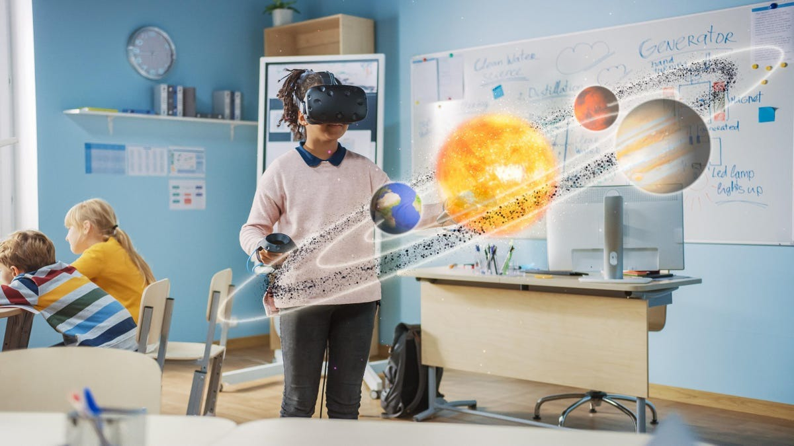
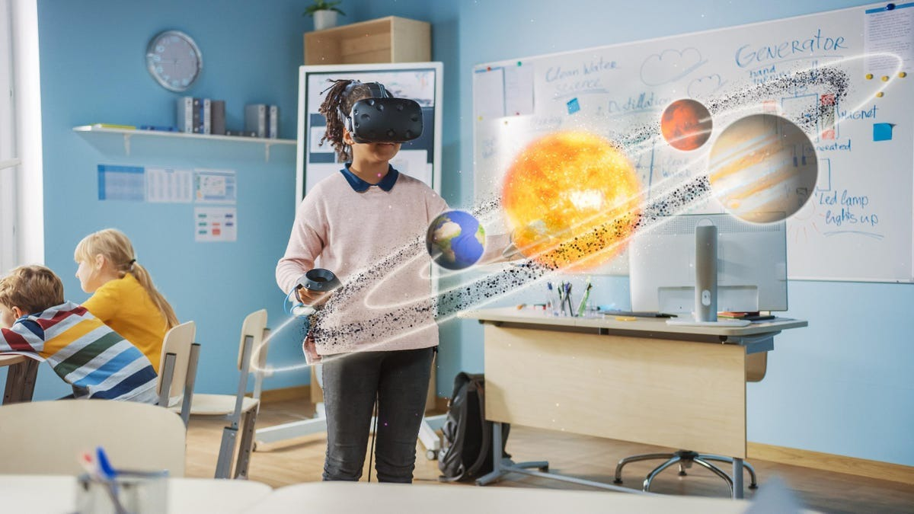

Kecerdasan Buatan (AI) dalam pendidikan adalah teknologi yang membantu meningkatkan pembelajaran siswa, mengotomatiskan tugas, dan melindungi data. AI dapat diterapkan dalam berbagai platform, seperti chatbot, video animasi, e-portofolio, dan VR.
 
